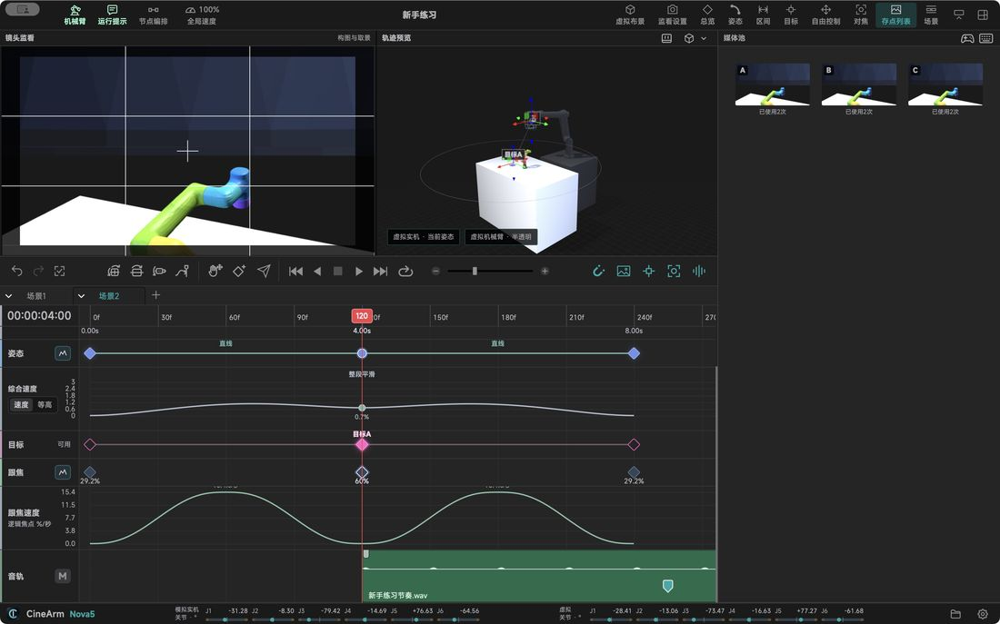

Features in detail / Saved positions: one master, many instances
Saved positions: one master, many instances
Recording a pose creates both a reusable master and one use of it — two different things.
Master and instanceThe master is the reusable position; the instance is one placement on a timeline or node. They undo together.
LabelsTimeline labels use numbers for order and letters for the saved position; cards show the ID, snapshot and usage count.
Creating referencesDrag a card onto a track or the node canvas to create an instance; right-click “show on timeline” to find who references it.
What the master storesOptical-centre position and full orientation, plus the last successful arm pose; dropping it in re-solves for the current arm and confirmed camera mount.
Delete instance vs masterDeleting a timeline point or node card keeps the master; deleting the saved position removes the master and every reference, with a confirmation listing the impact.
Batch housekeeping“Delete unused saved positions” clears unreferenced masters; “renumber in order” relabels A, B, C… continuing past Z as AA, AB.
Editing one instance keeps the other uses — “same saved position” does not mean every instance moves together.

Describes CineArm v0.1.46 behaviour.